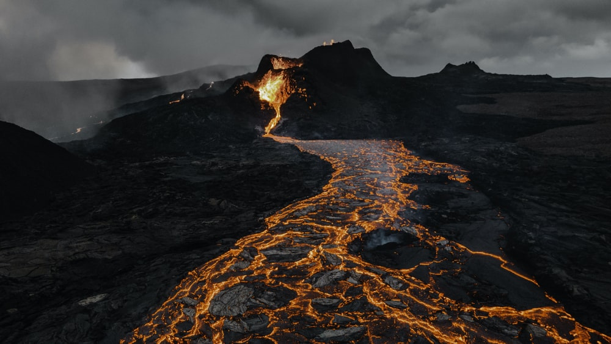

Burterran

Burterran is a volcanic wasteland. Mt. Charir Darastix – The Shattered Mountain is said to have erupted 1000 years, devastating the once lush island and replacing it with molten rock and ash. Shemetasammur, The Red Annihilation, was said to be the cause. Even as a young dragon, he was so powerful, even the mountains dare not to disobey his commands.
After he destroyed the island, humans attacked him and were almost successful at killing the young dragon. Since then, he has despised humans and never has forgiven their actions.
He himself forged the Red Dragonborn, the primary residents of Burnterran, out of eggs carved from the island’s obsidian. He has charged the dragonborn to serve him indefinitely, defend the island at any cost, and to bring destruction to humans. He also has a distaste for other dragonborns, and forbids red dragonborn from fornicating with dragonborns of any other color. If a mixed-breed is born to a female dragonborn, the mother is typically raped by all willing parties, dragonborn or not, until death (either by bleeding, starvation, being beaten, etc), and her halfborn child is either eaten by the village, or thrown into the ocean.
The Dragonborn created a village on the island, also called Burnterran, to do just that. For a millennium, they have defended the island from invaders, hostile or not, and have taught their young to burn cities and villages to the ground.
Although less aggressive and hostile than their ancestors, modern Burnterrans still prefer to stick to their island, and rarely give invaders a chance to negotiate or retreat. Shemetasmmur has not been seen by any living dragonborn, and has slipped into legend.
The island is also home to portals to the fire realm. These portals are well guarded by the red Dragonborn, and are forbidden to all, without the expressed permission of the village leaders. However, fire rats, fire bird, newts and salamanders frequently escape the portal and many can be found living on the island. Intelligent creatures from the fire realm are only permitted through the portal with the permission of the village leaders.
Shemetasammur - The Red Annihilation is our god and ruler of Burterran. In his absence, only the strongest among us may rule. Criaxeriac is our current cheif after slitting the throat of his predescesor in front of the whole village. He claims Shemetasammur demanded it of him, and he has a right to rule because it is Shemetasammur’s wish.
Yuurnakec, Criaxeriac’s beloved wife, also helps rule the village. She claims to hear the voice of Shemetasammur in her mind. Although this claim cannot be proven, she does seem to know many things she shouldn’t.